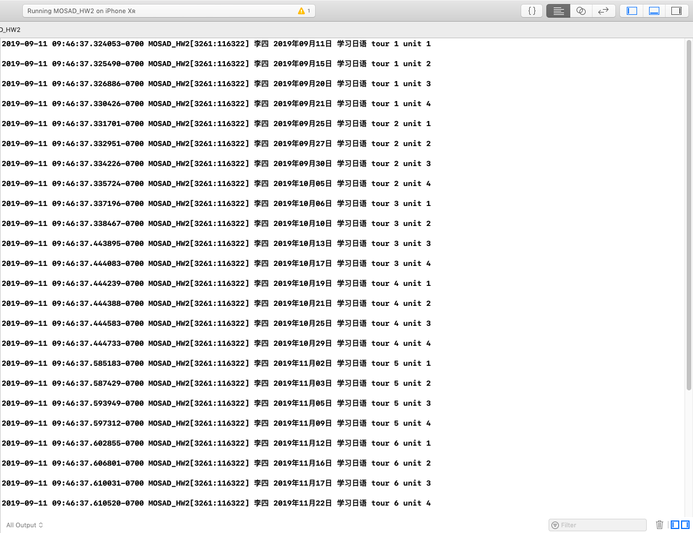
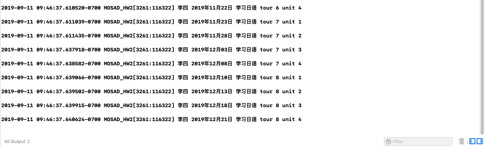

MOSAD_HW2
个人作业2-面向对象与Objective-C语法学习。
实验目的
- 学习掌握Objective-C语法，掌握基础字符串操作。
- OO知识——多态与继承
实验内容
给定三个用户张三，李四，王五。
给定四种语言英语、日语、德语、西班牙语。
实现场景输出（log形式即可）：随机选择一个用户和一种语言学习，从当前日期开始，随机产生时间进行学习，输出学习进度直至学习完毕。每个语言共8个tour，每个tour共4个unit，每次学习一个unit。
要求：
- 随机选定人名、语言后，一次性输出所有的结果。
- 随机时间指的是每次随机1-5天，每次学习时间在前一次的基础上加上刚刚随机出的天数。
- 需要用到多态。
关键代码及注释
头文件中定义Language类，子类English, Japanses, German, Spanish由Language派生而来。计划通过重写getName()函数来体现多态。
1
2
3
4
5
6
7
8
9
10
11
12
13
14
15
16
17
18
19
20
21
22
23
24
25
26
27
28
29
30
31
32
33
34
35
36
37
38
39
40
41
42
43
44
45
46
47
48
49
50
| //
// Header.h
// MOSAD_HW2
//
// Created by WillKen on 2019/9/9.
// Copyright © 2019 WillKen. All rights reserved.
//
#import <Foundation/Foundation.h>
NS_ASSUME_NONNULL_BEGIN
@interface Language : NSObject {
NSInteger progress_tour;
NSInteger progress_unit;
}
@property (nonatomic) NSTimeInterval day; //用于保存距离第一次学习时间天数的变量
- (void)learnOneUnit;
- (NSInteger)getTour;
- (NSInteger)getUnit;
- (bool)isFinish;
- (NSString *)getName;
- (NSString *)getTime:(NSTimeInterval) days; //获取每次学习时的日期
@end
@interface English : Language {
}
@end
@interface Japanese : Language {
}
@end
@interface German : Language {
}
@end
@interface Spanish : Language {
}
@end
NS_ASSUME_NONNULL_END
|
ViewController.m源文件
在.m源文件中实现具体的方法。通过产生1~3的随机数确定学生姓名，接着产生1~4的随机数确定要学习的语言。
确定姓名和语言后，我们要获得学习的日期才能进行打印。首先初始化的day为0，getDate()得到的即为当前日期。同时getDate()函数在返回结果前会调用seed()函数，seed()函数产生1~5的随机数加在day上，使得day充当学习时长记录者的角色。
每次打印完学习记录后，接着学习下一单元，直到将语言学习完毕。
1
2
3
4
5
6
7
8
9
10
11
12
13
14
15
16
17
18
19
20
21
22
23
24
25
26
27
28
29
30
31
32
33
34
35
36
37
38
39
40
41
42
43
44
45
46
47
48
49
50
51
52
53
54
55
56
57
58
59
60
61
62
63
64
65
66
67
68
69
70
71
72
73
74
75
76
77
78
79
80
81
82
83
84
85
86
87
88
89
90
91
92
93
94
95
96
97
98
99
100
101
102
103
104
105
106
107
108
109
110
111
112
113
114
115
116
117
118
119
120
121
122
123
124
125
126
127
128
129
130
131
132
133
134
135
136
137
138
139
140
141
142
143
144
145
146
147
148
149
150
151
152
153
154
155
156
157
158
159
160
161
| //
// ViewController.m
// MOSAD_HW2
//
// Created by WillKen on 2019/9/9.
// Copyright © 2019 WillKen. All rights reserved.
//
#import "ViewController.h"
#import "Header.h"
@interface ViewController ()
@end
@implementation Language
@synthesize day=_day;
//获取每次学习时的日期
-(NSString*)getTime:(NSTimeInterval) days{
NSTimeInterval next = days*60*60*24; //将单位转换成秒
NSDateFormatter *dateformatter = [[NSDateFormatter alloc] init];
[dateformatter setDateFormat:@"yyyy年MM月dd日"];
NSDate *currentDate = [NSDate dateWithTimeIntervalSinceNow:next]; //当前日期和next相加
NSString*date = [dateformatter stringFromDate:currentDate]; //类型转换
_day = (arc4random()%5)+1+_day; //随机产生1～5的天数
return date;
}
-(NSString *)getName{
return @"";
}
//类的初始化，将学习进度置为1
-(instancetype)init{
self=[super init];
if(self){
progress_unit=1;
progress_tour=1;
}
return self;
}
//学习一单元
-(void)learnOneUnit{
if(progress_unit==4){ //若已经学到第四单元，tour+1
progress_tour+=1;
}
progress_unit=progress_unit%4+1;
}
-(NSInteger)getTour{
return progress_tour;
}
-(NSInteger)getUnit{
return progress_unit;
}
//判断是否学习结束
-(bool)isFinish{
if(progress_tour>8)
return true;
else
return false;
}
@end
@implementation English
//重写getName函数
-(NSString*)getName{
return @"英语";
}
@end
@implementation Japanese
//重写getName函数
-(NSString*)getName{
return @"日语";
}
@end
@implementation German
//重写getName函数
-(NSString*)getName{
return @"德语";
}
@end
@implementation Spanish
//重写getName函数
-(NSString*)getName{
return @"西班牙语";
}
@end
@implementation ViewController
- (void)viewDidLoad {
[super viewDidLoad];
// Do any additional setup after loading the view.
NSString* name; //name变量记录学习者的名字
//产生随机数，确定学习者的名字
int value1 = (arc4random()%3)+1;
switch(value1){
case 1:
name= @"张三";
break;
case 2:
name=@"李四";
break;
case 3:
name=@"王五";
break;
}
//产生随机数，确定要学习的语言
int value2 = (arc4random()%4)+1;
switch(value2){
case 1:
{English* lan=[[English alloc] init];
while(![lan isFinish]){ //若当学习没有结束，则打印学习记录，继续学习一单元，直到学习结束。
NSLog(@"%@ %@ 学习%@ tour %zd unit %zd\n",name,[lan getTime:lan.day],[lan getName],[lan getTour],[lan getUnit]);
[lan learnOneUnit];
}
}
break;
case 2:
{Japanese* lan=[[Japanese alloc] init];
while(![lan isFinish]){ //若当学习没有结束，则打印学习记录，继续学习一单元，直到学习结束。
NSLog(@"%@ %@ 学习%@ tour %zd unit %zd\n",name,[lan getTime:lan.day],[lan getName],[lan getTour],[lan getUnit]);
[lan learnOneUnit];
}
}
break;
case 3:
{German* lan=[[German alloc] init];
while(![lan isFinish]){ //若当学习没有结束，则打印学习记录，继续学习一单元，直到学习结束。
NSLog(@"%@ %@ 学习%@ tour %zd unit %zd\n",name,[lan getTime:lan.day],[lan getName],[lan getTour],[lan getUnit]);
[lan learnOneUnit];
}
}
break;
case 4:
{Spanish* lan=[[Spanish alloc] init];
while(![lan isFinish]){ //若当学习没有结束，则打印学习记录，继续学习一单元，直到学习结束。
NSLog(@"%@ %@ 学习%@ tour %zd unit %zd\n",name,[lan getTime:lan.day],[lan getName],[lan getTour],[lan getUnit]);
[lan learnOneUnit];
}
}
break;
}
}
@end
|
运行结果


学习收获
通过这次实验，我初步了解了Objective-C的数据类型，熟悉了它独特的函数调用方式，学会了@property和@synthesize的语法规则，并能够将C/C++中所学的多态性应用在实验中。
实验中遇到的比较大的困难是时间的计算问题。通过在网上查找相关函数，找到了解决办法。设指一个单独的变量来累积学习时间，每次打印时，打印当前时间加累积学习时间来实现相关功能。
感觉不足的地方是，打印的相关语句没有很好地进行封装，使得打印的代码重复了很多遍。本来想在switch语句后进行相关操作，但是这样做会报错，所以不得不将打印的相关代码复制了N遍。随着语言的熟悉，在之后需要进行改进。
最开始，想要在主函数中设计int day=0; 来记录累计学习的天数，然后每产生一个随机天数就加在day上,但神奇的是int day=0;那里一直会报错，很是神奇。